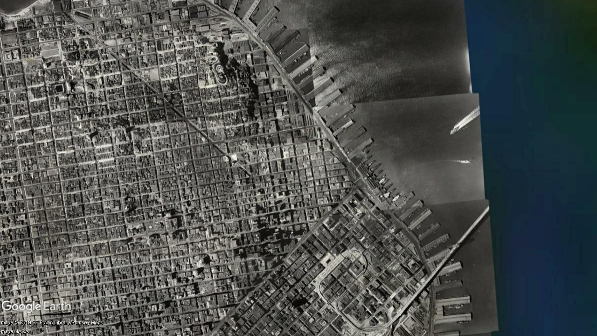
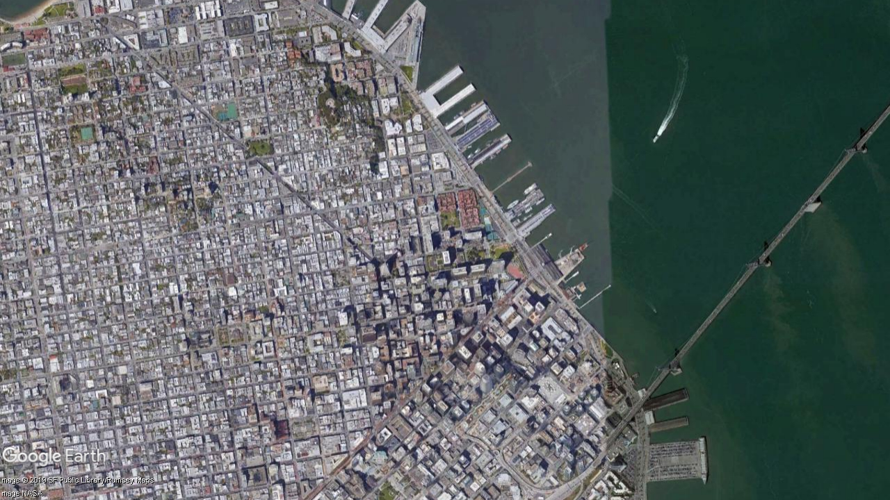

San Francisco Downtown：1938-2018
Historic Urban Development
1938 vs 2018


2000 vs 2018


San Francisco was founded on June 29, 1776, when colonists from Spain established Presidio of San Francisco at the Golden Gate and Mission San Francisco de Asís a few miles away, all named for St. Francis of Assisi.[2] The California Gold Rush of 1849 brought rapid growth, making it the largest city on the West Coast at the time. San Francisco became a consolidated city-county in 1856.
San Francisco's status as the West Coast's largest city peaked between 1870 and 1900, when around 25% of California's population resided in the city proper.